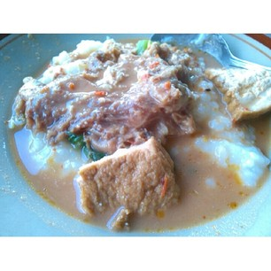

Tumpang Koyor sudah dikenal sebagai makanan khas salatiga. Tumpang koyor tidak hanya disajikan dengan nasi tetapi bisa juga dengan bubur yang cocok dijadikan menu sarapan pagi. Bubur koyor ini dapat mudah ditemukan di sekitar pasar pagi salatiga atau di depan ruko-ruko pasar di pagi hari.
